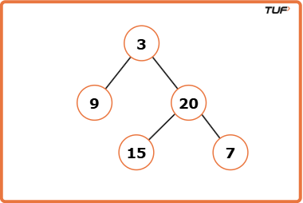
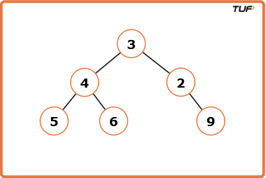

Construct A Binary Tree from Inorder and Preorder Traversal
Problem Statement: Given the Preorder and Inorder traversal of a Binary Tree, construct the Unique Binary Tree represented by them..
Examples
Input : preorder = [3, 9, 20, 15, 7] , inorder = [9, 3, 15, 20, 7] Output : [3, 9, 20, null, null, 15, 7] Explanation : The output tree is shown below.
Input : preorder = [3, 4, 5, 6, 2, 9] , inorder = [5, 4, 6, 3, 2, 9] Output : [3, 4, 2, 5, 6, null, 9] Explanation : The output tree is shown below.
Disclaimer: Here is the practice link to help you assess your knowledge better. It's highly recommend trying to solve it before looking at the solution.
Approach
Algorithm
To construct a binary tree from preorder and inorder traversals, we utilize two key properties:
- Preorder traversal gives us the root of the tree/subtree first.
- Inorder traversal helps determine the left and right subtrees by locating the root's index.
With these insights, we can recursively build the tree. Using indices instead of slicing
arrays avoids extra space, and a hashmap helps us find root positions in O(1)
time.
- Store each value's index from the inorder traversal in a hashmap for quick lookup.
- Create a recursive function
buildTreethat takes preorder, inorder, and their current index boundaries. - Base case: If the boundaries are invalid (preStart > preEnd or inStart > inEnd), return NULL.
- Identify the root as
preorder[preStart], and find its index in the inorder traversal using the hashmap. - Calculate the size of the left subtree:
leftSubtreeSize = rootIndex - inStart. - Recursively build the left subtree using updated indices based on the leftSubtreeSize.
- Recursively build the right subtree using the remaining indices.
- Return the root node with left and right children connected.
Code
#include <bits/stdc++.h>
using namespace std;
// TreeNode structure
struct TreeNode {
int val;
TreeNode *left;
TreeNode *right;
// Constructor to initialize a node
TreeNode(int x) : val(x), left(nullptr), right(nullptr) {}
};
class Solution {
public:
// Function to build the binary tree from preorder and inorder
TreeNode* buildTree(vector<int>& preorder, vector<int>& inorder) {
// Map to store the index of each value in inorder
map<int, int> inMap;
// Fill the map with inorder values and their indices
for (int i = 0; i < inorder.size(); i++) {
inMap[inorder[i]] = i;
}
// Call the recursive helper function
return build(preorder, 0, preorder.size() - 1, inorder, 0, inorder.size() - 1, inMap);
}
private:
// Recursive function to build tree using preorder and inorder segments
TreeNode* build(vector<int>& preorder, int preStart, int preEnd,
vector<int>& inorder, int inStart, int inEnd, map<int, int>& inMap) {
// Base condition
if (preStart > preEnd || inStart > inEnd) return nullptr;
// The first element in preorder is root
TreeNode* root = new TreeNode(preorder[preStart]);
// Find the root index in inorder
int inRoot = inMap[root->val];
// Number of elements in left subtree
int numsLeft = inRoot - inStart;
// Recursively build left and right subtrees
root->left = build(preorder, preStart + 1, preStart + numsLeft,
inorder, inStart, inRoot - 1, inMap);
root->right = build(preorder, preStart + numsLeft + 1, preEnd,
inorder, inRoot + 1, inEnd, inMap);
return root;
}
};
// Inorder traversal to print tree
void printInorder(TreeNode* root) {
if (!root) return;
printInorder(root->left);
cout << root->val << " ";
printInorder(root->right);
}
int main() {
vector<int> inorder = {9, 3, 15, 20, 7};
vector<int> preorder = {3, 9, 20, 15, 7};
Solution sol;
TreeNode* root = sol.buildTree(preorder, inorder);
cout << "Inorder of Unique Binary Tree Created:\n";
printInorder(root);
cout << endl;
return 0;
}
Complexity Analysis
Time Complexity: O(N), as ach node is visited once.
Space Complexity: O(N), for the hashmap and recursion stack (worst case when tree is skewed).